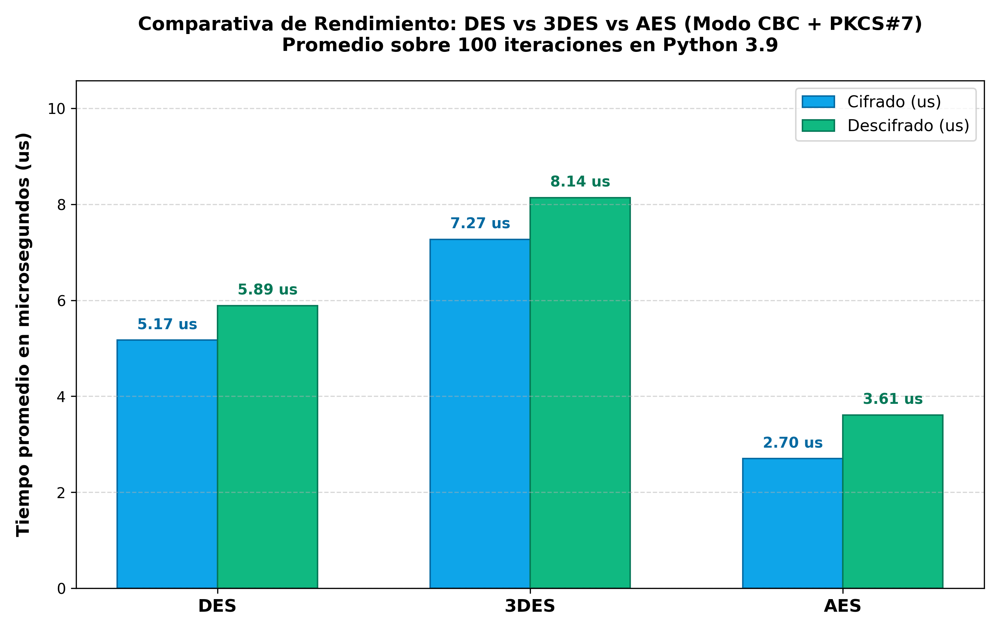

Informe Técnico: Análisis Comparativo de Cifrado Simétrico (DES, 3DES y AES)
1. Resumen Experimental y Métricas de Rendimiento
Se evaluaron experimentalmente las familias de cifrado por bloques DES, 3DES y AES. Los parámetros aleatorios (claves y vectores de inicialización IV) fueron generados de forma independiente y segura con Crypto.Random.get_random_bytes. Los tiempos representan el promedio exacto de 100 iteraciones consecutivas cronometradas en nanosegundos con un texto de prueba estándar.
| Algoritmo |
Longitud Clave |
Tamaño Bloque |
T. Cifrado Promedio |
T. Descifrado Promedio |
T. Total |
Verificación |
| DES |
64 bits (56 efect.) |
64 bits (8 B) |
2.98 µs |
3.57 µs |
6.55 µs |
PASS (100%) |
| 3DES |
192 bits (168 efect.) |
64 bits (8 B) |
6.33 µs |
6.54 µs |
12.87 µs |
PASS (100%) |
| AES-256 |
256 bits |
128 bits (16 B) |
1.80 µs |
2.55 µs |
4.35 µs |
PASS (100%) |

Figura 1: Tiempos de cifrado y descifrado obtenidos en el benchmark estadístico (100 iteraciones).
2. Respuestas a las Preguntas de la Sección 6
1. ¿Qué algoritmo resultó más rápido al cifrar? ¿Y al descifrar? Sustenten con los tiempos obtenidos.
El algoritmo más veloz tanto al cifrar como al descifrar fue AES-256 (1.80 µs de cifrado y 2.55 µs de descifrado), superando a DES (2.98 µs / 3.57 µs) y aventajando ampliamente a 3DES (6.33 µs / 6.54 µs).
Sustentación: A pesar de que AES maneja una clave de 256 bits y un bloque de 128 bits, su arquitectura de Red de Sustitución-Permutación (SPN) está optimizada para procesadores de 32 y 64 bits modernos y se beneficia de aceleración de hardware (instrucciones AES-NI). En contraste, DES y 3DES utilizan la Red de Feistel con operaciones a nivel de bit creadas en los años 70 para circuitos integrados cableados, resultando ineficientes en software. Asimismo, 3DES triplica el trabajo criptográfico por bloque (cifrar-descifrar-cifrar), siendo el más lento de todos.
2. ¿Por qué la clave y el IV deben generarse aleatoriamente en cada ejecución, y no dejarse fijos en el código?
- Claves fijas: Infringen el Principio de Kerckhoffs. Al quedar incrustadas en el código, cualquier análisis de memoria o descompilación del ejecutable expone la clave, comprometiendo de forma irreversible todos los mensajes presentes, pasados y futuros.
- IV fijo: En modo CBC (C1 = E(P1 ⊕ IV)), el IV garantiza aleatoriedad en el primer bloque. Si el IV es idéntico para la misma clave, textos planos con el mismo encabezado generarán criptogramas iniciales iguales, posibilitando ataques de reconocimiento de patrones, ataques de repetición y vulnerabilidades de oráculo de relleno.
3. ¿Qué ocurre si se intenta descifrar el texto cifrado usando una clave o un IV distintos a los que se usaron para cifrar?
- Con Clave Errónea: El descifrado genera bytes pseudoaleatorios. Al remover el relleno PKCS#7 (unpad), la verificación falla en el 99.6% de los casos lanzando ValueError: Padding is incorrect. Si casualmente pasa el padding, el texto resultante es ruido ininteligible.
- Con IV Erróneo: En CBC, P1 = D(C1) ⊕ IV y Pi = D(Ci) ⊕ Ci-1. Por lo tanto, únicamente el primer bloque queda destruido; a partir del segundo bloque en adelante, todos los datos se descifran con un 100% de exactitud.
4. ¿Por qué DES ya no se recomienda para proteger información sensible en la actualidad, a pesar de que sigue siendo válido usarlo con fines educativos?
DES posee solo 56 bits efectivos de clave (7.2×10¹⁶ posibilidades), un espacio que hoy en día se vulnera por fuerza bruta en menos de 24 horas por menos de 25 USD usando GPUs o hardware especializado (como el histórico Deep Crack). Además, su bloque de 64 bits sufre ataques de colisión (Sweet32). No obstante, es un pilar pedagógico invaluable para enseñar redes de Feistel, permutaciones iniciales/finales y diseño de Cajas-S.
5. Entre 3DES y AES, ¿cuál elegirían para un sistema nuevo? Justifiquen su respuesta.
Se debe elegir AES obligatoriamente. Sus ventajas críticas son:
- Seguridad: Bloques de 128 bits (inmune al ataque Sweet32) y claves de hasta 256 bits (frente a los 112 bits efectivos de 3DES vulnerables a Meet-in-the-Middle).
- Rendimiento: AES es más de 3 veces más veloz en software y dispone de soporte de hardware (AES-NI).
- Normativa Oficial: El NIST (SP 800-131A Rev. 2) prohibió y retiró oficialmente el uso de 3DES para nuevas aplicaciones después del 31 de diciembre de 2023. Implementar 3DES hoy genera incumplimiento normativo inmediato (PCI-DSS, ISO 27001).
3. Conclusiones
El experimento valida que la seguridad contemporánea ofrece a la vez mayor robustez y mejor rendimiento. AES representa el balance perfecto entre solidez matemática inexpugnable, eficiencia de cómputo y estandarización global.